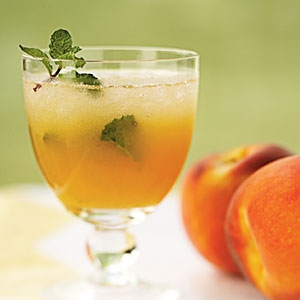

| Peach Mojitos | |
|---|---|
|  |
1. Place peaches in a blender or food processor; process until smooth. Press peach puree through a fine sieve into a bowl; discard solids.
2. Combine rind, lime juice, sugar, and mint in a large pitcher; crush juice mixture with the back of a long spoon. Add peach puree and rum to pitcher, stirring until sugar dissolves. Stir in club soda. Serve over crushed ice. Garnish with mint sprigs, if desired. |